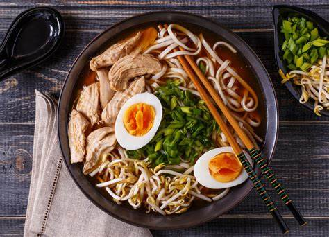

Culture Japonaise
La culture japonaise est riche et variée, avec des traditions anciennes qui perdurent aujourd'hui. Les festivals comme le Hanami, qui célèbre la floraison des cerisiers, ou le Tanabata, où les gens écrivent des souhaits sur des bandes de papier colorées, sont des moments uniques dans l'année.

Les Lieux Incontournables du Japon
Le Japon a une histoire riche et variée. À l'époque ancienne, il passe de sociétés de chasseurs-cueilleurs (Jomon) à une culture agricole (Yayoi). Le pouvoir se centralise sous le clan Yamato, puis évolue sous la cour de Heian, où les samouraïs commencent à émerger. Durant la période féodale, des seigneurs de guerre se disputent le contrôle du pays jusqu'à l'unification par Tokugawa, inaugurant l'ère Edo, une période de paix et d'isolationnisme. La Restauration Meiji modernise le pays, le transformant en une puissance industrielle. Après les tragédies de la Seconde Guerre mondiale, le Japon renaît économiquement, devenant une des plus grandes puissances mondiales, tout en naviguant les défis modernes, comme la stagnation économique et le vieillissement de sa population.
Cuisine Japonaise
La cuisine japonaise est mondialement reconnue pour sa simplicité et ses saveurs uniques. Le sushi, emblème de la gastronomie japonaise, est apprécié pour la fraîcheur de ses ingrédients. Les ramen, nouilles en bouillon, sont également un plat populaire qui réchauffe les cœurs et les esprits.
